Tyres are the sole contact point between the car and the track, making them absolutely crucial for achieving optimal grip, speed, and overall performance in Formula 1 racing.
Tyre degradation significantly impacts lap times and race pace, forcing teams to make critical strategic decisions. How a tyre wears down can determine whether a driver gains or loses positions.
Modern F1 races are a delicate balance of managing tyre wear, optimizing their lifespan, and executing strategically timed pit stops. These elements collectively dictate the outcome of a Grand Prix.
Tyre degradation plays a critical role in determining race performance and pit stop strategy in Formula 1. The condition of a tyre changes dynamically over time due to multiple factors such as:
This degradation behavior is non-stationary, meaning its statistical properties change across race laps and stints.
Existing studies address tyre degradation prediction, uncertainty-aware modelling, and pit stop strategy optimization as separate problems rather than as a unified system.
Predictive models achieve high accuracy but are not integrated with real-time decision-making algorithms for pit stop strategy.
Strategy optimization approaches rely on simplified or heuristic tyre degradation assumptions, limiting their effectiveness under dynamic race conditions.
Most solutions are offline or research-focused, with no simple, interactive user interface for simulation, testing, or real-time strategy evaluation.
Fetch, clean, and engineer features from official F1 timing data (FastF1 API)
Train 5 forecasting models: ARIMA, VAR, LSTM, XGBoost, Hybrid
Dual-level evaluation (Instance vs Curve) with temporal train/test splits
XGBoost-driven pit stop recommender with interactive Streamlit dashboard
| SNo. | Paper Title/Author | Year | Dataset | Methodology | Remark |
|---|---|---|---|---|---|
| 1 | Explainable Time Series Prediction of Tyre Energy in Formula One Race Strategy Jamie Todd, Junqi Jiang |
2025 | Serialised and tabular raw data by the Mercedes-AMG PETRONAS F1 Team, taken from real-time sources such as the car telemetry and GPS | Multivariate time series forecasting using: Linear Regression, XGBoost, RNN, LSTM, GRU, TFT; plus Explainable AI (feature importance + counterfactual explanations) | Strong predictive model for tyre energy; includes explainability; does not directly optimize pit stop decisions. |
| 2 | A State-Space Approach to Modeling Tire Degradation in Formula 1 Racing C. Cappello & S. Hoegh |
2025 | Publicly available Formula 1 timing data from FastF1 Python API | Bayesian state-space modelling: latent tyre degradation estimated with pit stops as state resets and lap time modelled as function of fuel and latent pace. | Probabilistic modelling captures latent tyre dynamics; adds uncertainty estimates; focuses on modelling, not direct strategy optimization. |
| 3 | Real Time Tyre Strategy Decision in F1 Using A* Algorithm Rinaldi M., et al |
2025 | Simulation-like model states (lap, tyre compound, wear level, track conditions); no large real dataset — heuristic/transition environment for A* evaluation | Search-based optimization (A*): cost function for lap time & wear, heuristic estimating future performance; finds optimal pit sequence minimizing total race time. | Algorithmic decision model for pit strategy; does not use time series prediction directly; depends on heuristic cost estimates. |
This project bridges the gap by building an end-to-end system that trains, compares, and deploys multiple time series models into a unified strategy engine with an interactive web interface — integrating prediction and decision-making into one pipeline.
FastF1 is a Python library that wraps the official F1 live-timing API. It provides lap-by-lap timing, telemetry, tyre compound, sector splits, and positional data — everything needed for degradation modelling.
Session Loading
For each Grand Prix, load the Race session via fastf1.get_session(year, gp, 'R'). This downloads all timing data from the F1 servers.
Lap Extraction
Call session.laps to get every lap from every driver. Extract 24 raw features including LapTime, Compound, TyreLife, SpeedI1/I2/FL/ST, sector times, and position.
Metadata Tagging
Annotate each lap with Driver, Team, Circuit, Year, and TotalLaps. Output saved as f1_lap_data.csv.
FastF1 caches raw API responses locally in cache/. Subsequent runs skip network calls — builds are reproducible and fast (< 5 s for cached data).
| Category | Columns | Description |
|---|---|---|
| Timing | LapTimeSec, Sector1/2/3 SessionTime | Total lap time and three sector splits (seconds) |
| Tyre | Compound, TyreLife, Stint, FreshTyre | Compound name, laps on tyre, stint index, new/used flag |
| Speed | SpeedI1, SpeedI2, SpeedFL, SpeedST | Speed traps at intermediates, finish line, speed trap (km/h) |
| Position | Position, LapNumber | Race position and lap count |
| Context | Driver, Team, Circuit, Year, TotalLaps, TrackStatus | Metadata for grouping and circuit identification |
| Pit | PitOutTime, PitInTime | NaT if no pit; used to detect pit-stop laps |
LapTimeSec=92.41 | Compound=MEDIUM | TyreLife=8 | Stint=1 | SpeedST=312 | Driver=VER | Circuit=Sakhir | Year=2023
| # | Filter | What It Removes | Why It Matters |
|---|---|---|---|
| 1 | Lap-time window | Laps < 50 s or > 200 s | Eliminates pit-in/out laps, red-flag laps, and timing glitches |
| 2 | WET / INTER removal | Laps on wet-weather tyres | Project scope is dry compounds only (SOFT, MEDIUM, HARD) |
| 3 | Safety-car filter | Laps where TrackStatus ≠ normal racing | SC/VSC artificially slows pace; pollutes degradation signal |
| 4 | NaN drop | Rows with missing LapTime or sectors | Ensures every row has a valid timing measurement |
| 5 | IQR outlier clip | Lap times beyond 1.5 × IQR per circuit | Removes extreme values that skew regression targets |
Every removed lap is non-representative of normal racing degradation. Keeping them would teach models that “lap time can randomly jump 30 seconds” — wrecking both the regression target (FuelCorrectedLapTime) and the degradation curves used by ARIMA/VAR. Cleaning is not optional; it is the foundation of signal quality.
| Feature | How It’s Built & Intuition |
|---|---|
| TyreLife | Laps completed on current set — primary wear indicator |
| CompoundEncoded | SOFT=0, MEDIUM=1, HARD=2 — ordinal softness ranking |
| StintLap | Lap within current stint (resets on pit) — captures fresh-tyre warm-up |
| RaceProgress | LapNumber / TotalLaps — 0→1 normalised race position |
| FuelEffect | 0.06 × (TotalLaps − LapNumber) — seconds of fuel-mass time penalty remaining |
| TyreLifeNorm | TyreLife / expected_life — normalised by compound (SOFT 25, MED 35, HARD 45) |
| AvgSpeed | Mean of 4 speed traps — captures aero/setup performance |
| CircuitEncoded | Label-encoded circuit name — captures track-specific baseline |
| DriverEncoded | Label-encoded driver abbreviation — captures driving-style effect |
FuelCorrectedLapTime = LapTimeSec − FuelEffect
Subtracting the fuel-mass time advantage isolates pure tyre degradation. As fuel burns off, cars naturally get faster — this correction ensures the model learns only the tyre-wear signal.
Positional 80/20 split preserving chronological order:
Scaler fitted on train only → applied to test. No future data leaks into training. Stint segmentation: 1,089 stints (871 train / 218 test).
processed_data.csv — full cleaned + engineered datasetscaler.pkl — StandardScaler fit on training featureslabel_encoders.pkl — circuit + driver mappingsThe strategy engine uses the trained XGBoost model for real-time degradation prediction:
Historically computed from 2023–2024 stint data:
| Driver | Style | SOFT deg | MED deg | HARD deg |
|---|---|---|---|---|
| Verstappen | Aggressive | 0.092 | 0.027 | 0.065 |
| Hamilton | Balanced | 0.063 | 0.061 | 0.063 |
| Leclerc | Smooth | 0.088 | 0.032 | 0.058 |
| Norris | Aggressive | 0.105 | 0.039 | 0.088 |
| Sainz | Balanced | 0.073 | 0.032 | 0.066 |
Values = median degradation rate (sec/lap) across all stints
Built with Streamlit featuring 4 tabs:
Model predicts per lap-row, compared to actual lap time delta. Finer granularity, larger test set. Used by: XGBoost, LSTM, Hybrid
Model forecasts degradation curves per stint, compared to averaged actual degradation curve. Used by: ARIMA, VAR
| Model | Eval Level | RMSE | MAE | R² | Accuracy | F1 Score |
|---|---|---|---|---|---|---|
| ★ XGBoost | Instance | 1.246 | 0.800 | 0.448 | 0.824 | 0.580 |
| LSTM | Instance | 1.065 | 0.803 | 0.110 | — | — |
| VAR (best curve) | Curve | 0.850 | 0.585 | 0.044 | — | — |
| ARIMA | Curve | 1.018 | 0.702 | 0.006 | — | — |
| Hybrid | Instance | 1.253 | 0.801 | 0.441 | — | — |
Note: Instance and Curve metrics are not directly comparable due to different evaluation granularity
XGBoost captures ~45% of explainable variance in per-lap degradation after removing data leakage (leaked features inflated earlier R² to 0.98). This honest R²=0.448 remains the strongest instance-level result, with the Hybrid (R²=0.441) closely matching it via residual stacking.
VAR outperforms ARIMA at curve-level (RMSE 0.850 vs 1.018) by modelling cross-compound dynamics as a multivariate system. Capturing lead-lag relationships between SOFT, MEDIUM, and HARD degradation gives VAR a 16% RMSE improvement over univariate ARIMA.
The redesigned Hybrid (ARIMA base + XGBoost residual) achieves R²=0.441 — nearly matching standalone XGBoost (0.448). ARIMA contributes a weak base signal (R²≈0.006); XGBoost corrects compound/circuit/driver residuals. Key insight: residual stacking correctly combines time-series structure with ML, unlike the previous alpha-blend which conflated evaluation paradigms.
After simplifying to a single LSTM(32) layer with reduced regularisation (Dropout 0.15, recurrent_dropout 0.1, Huber loss, lr=0.0003, 120 epochs), the LSTM achieves R²=0.110 at instance level — a meaningful positive result. The lighter architecture avoids overfitting on ~22K samples. While it does not match XGBoost (0.448), its autoregressive curve forecasts remain smooth and plausible. Further gains require more seasons or richer temporal features.
Each faded line is a real stint from our 2023–2024 dataset. The bold blue curve is the ARIMA fitted curve — a single representative prediction per compound. Because ARIMA forecasts one average curve (not per-driver / per-circuit), individual stints scatter widely around it, explaining the modest R².
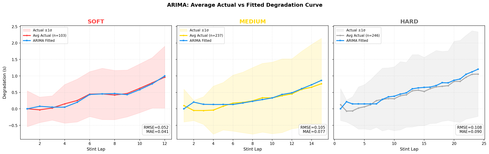
For each stint in test data: 1. Clean stint → actual degradation curve 2. Retrieve ARIMA fitted curve for compound 3. Compare point-by-point: actual[0:n] vs curve[0:n] 4. Accumulate all (actual, predicted) pairs → Compute RMSE, MAE, R² over 16,444 points
Why R² is low: ARIMA uses one curve per compound (SOFT / MEDIUM / HARD) — it cannot distinguish Monaco from Monza, or Hamilton from Verstappen. Stint-to-stint variance dominates, leaving <1% of variance explained. This is expected and establishes the baseline that feature-rich models (XGBoost) improve upon.
Testing whether past values of one compound’s degradation help predict another:
| Direction | F-stat | p-value | Significant? |
|---|---|---|---|
| SOFT → MEDIUM | 12.97 | 0.002 | ✓ Yes |
| SOFT → HARD | 8.31 | 0.009 | ✓ Yes |
| MEDIUM → SOFT | 0.42 | 0.523 | ✗ |
| HARD → SOFT | 0.06 | 0.803 | ✗ |
| HARD → MEDIUM | 1.30 | 0.267 | ✗ |
| MEDIUM → HARD | 0.02 | 0.892 | ✗ |
SOFT compound is the leading indicator — its degradation Granger-causes both MEDIUM (p=0.002) and HARD (p=0.009). No reverse causality exists. This confirms that softer tyres degrade first and their wear pattern propagates predictively to harder compounds.
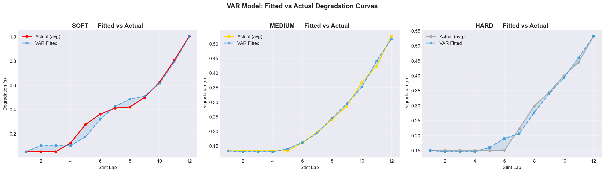
VAR fitted curves vs actual average degradation for SOFT / MEDIUM / HARD
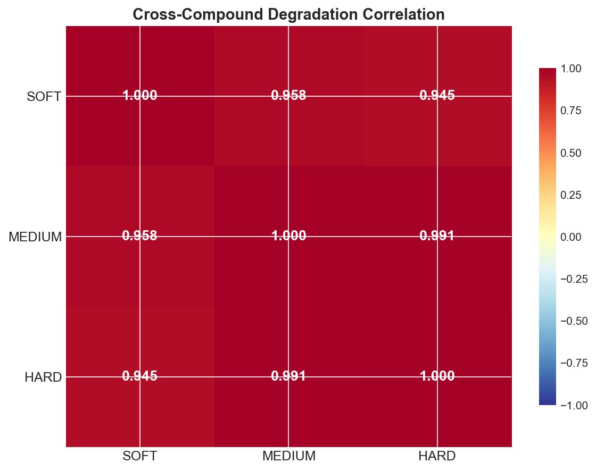
Cross-correlation: SOFT degradation leads MEDIUM and HARD by 1–2 laps
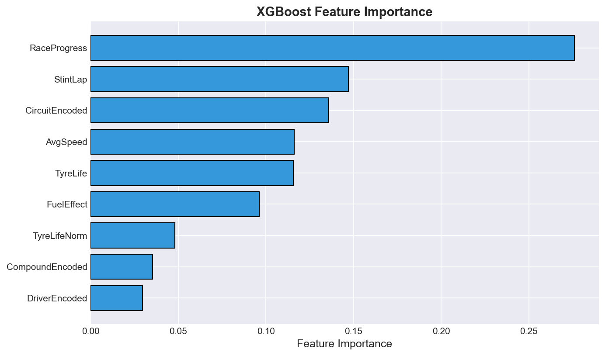
XGBoost feature importance — TyreLife and CompoundEncoded dominate
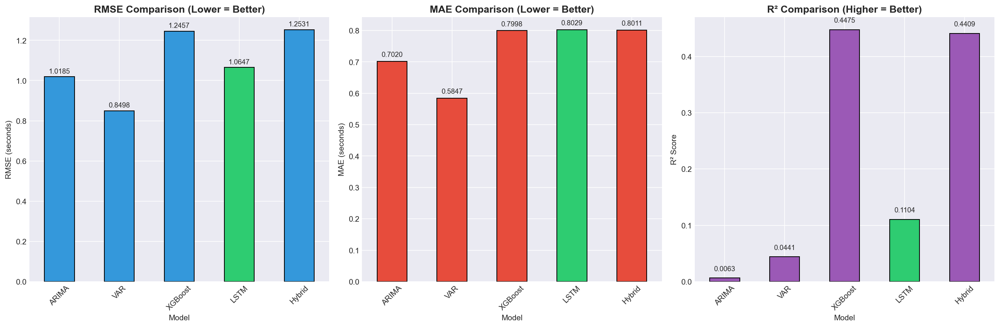
RMSE comparison across all 5 models
Precision > Recall indicates the tuned classifier is conservative — it avoids false pit calls, which aligns with real-world preference (unnecessary pit stop ≈ 22s penalty).
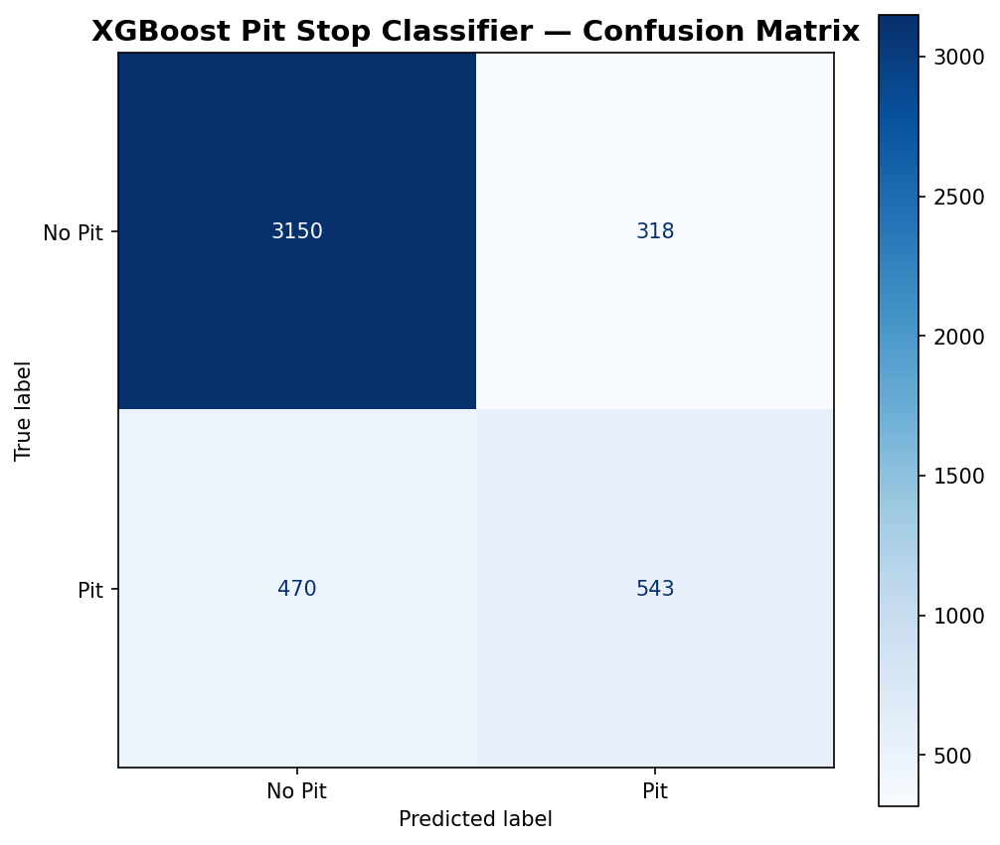
Confusion matrix — pit vs no-pit predictions on test set
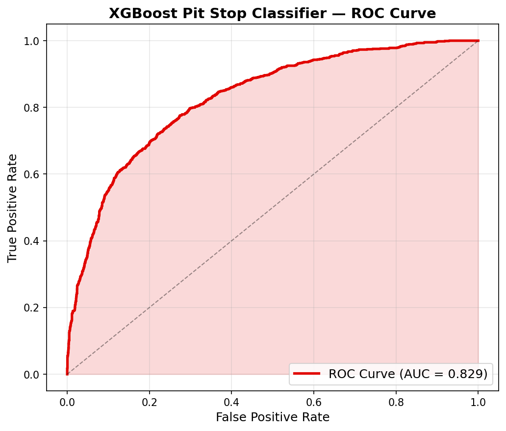
ROC curve — AUC = 0.829 indicates strong discriminative ability
XGBoost’s 9-feature vector (compound, circuit, driver profile, fuel-corrected degradation) gives it the strongest instance-level prediction, while VAR dominates at curve-level forecasting. This dual-level divergence demonstrates that no single model paradigm is universally best — the choice depends on whether the strategy engine needs per-lap precision or smooth stint forecasts.
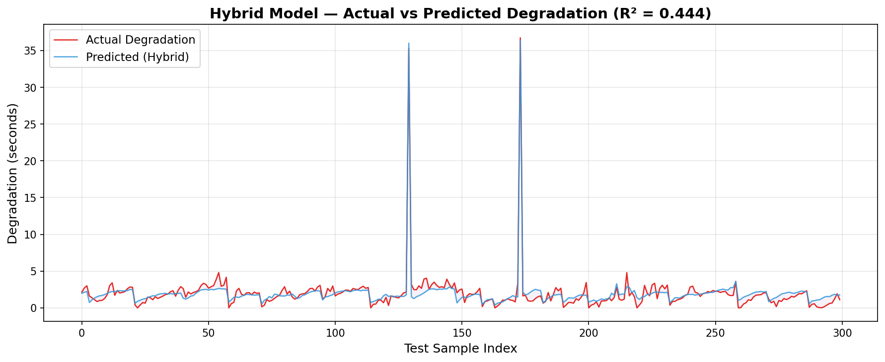
Red = Actual degradation, Blue = Hybrid prediction (ARIMA base + XGBoost residual correction)
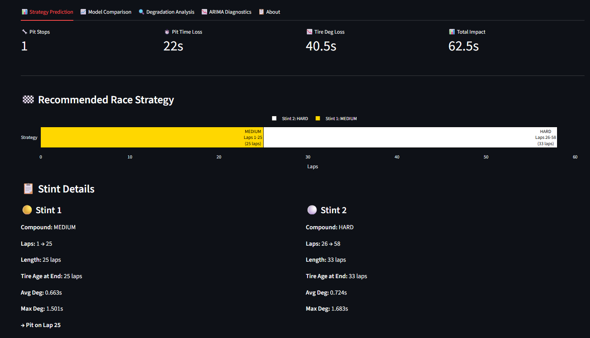
Strategy tab — live pit stop recommendations per driver & circuit
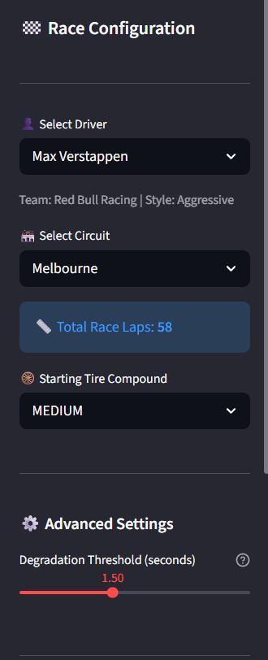
Sidebar — select driver, circuit, total laps
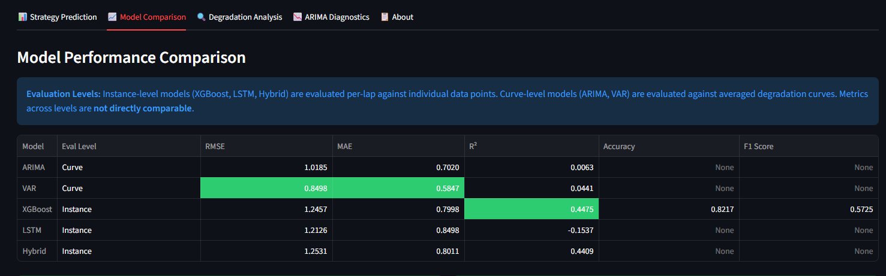
Model comparison tab — side-by-side metrics for all 5 models
The dashboard bridges academic research and practical tooling — any F1 enthusiast or analyst can simulate strategies without running code. Driver profiles, circuit-specific calibration, and cost-benefit pit stop analysis are all accessible through a web interface.
XGBoost is the optimal model for pit stop prediction — achieving R² = 0.448 and F1 = 0.580 for pit stop classification after rigorous data-leakage removal, it is the strongest instance-level model using a clean 9-feature vector spanning compound, circuit, driver, and fuel effects.
Dual-level evaluation is essential — Instance-level and curve-level metrics measure fundamentally different things. XGBoost dominates instance-level; VAR performs best at curve-level. Reporting only one paradigm would misrepresent model capabilities.
Multivariate time series outperforms univariate for curve forecasting — VAR beats ARIMA by 16% in RMSE by modelling compound interactions jointly, demonstrating that cross-compound dynamics carry predictive signal beyond what univariate models capture.
The end-to-end system demonstrates practical value — By integrating prediction into an interactive strategy engine, the system bridges the gap between academic degradation modeling and actionable race strategy decisions.
Residual stacking is the correct ensemble approach — The ARIMA + XGBoost residual hybrid (R²=0.441) validates that combining a time-series base with ML residual correction works, while naive alpha-blending of curves fails. Matching model paradigms to evaluation level is critical.
First systematic comparison of 5 forecasting models on F1 tyre data using both instance-level (per-lap) and curve-level (per-stint) evaluation, revealing that the best instance model is not the best curve model.
Unlike prior work that separates prediction from decision-making, this system feeds trained XGBoost predictions directly into a cost-benefit pit stop optimizer with driver-specific calibration.
Novel fuel-corrected degradation feature (isolating tyre wear from fuel mass reduction) combined with 9-dimensional feature space capturing interactions between driver style, circuit characteristics, and compound performance.
Bridges the gap between academic research and practical tooling by delivering a Streamlit web app for real-time strategy simulation, model comparison, and degradation visualization — accessible to non-technical users.